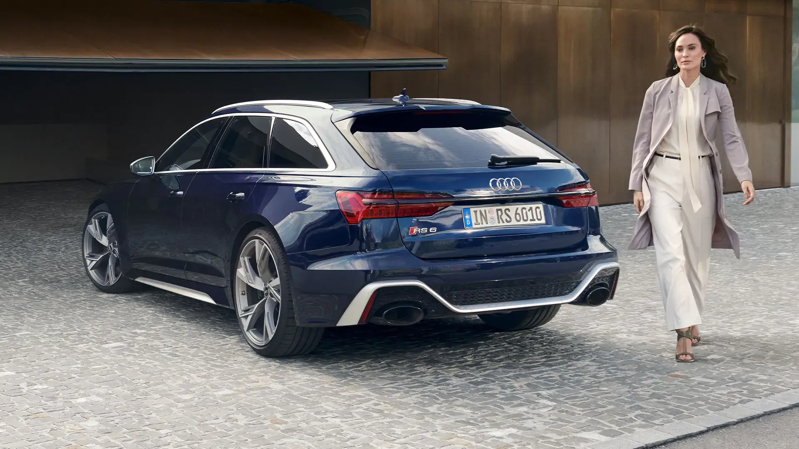
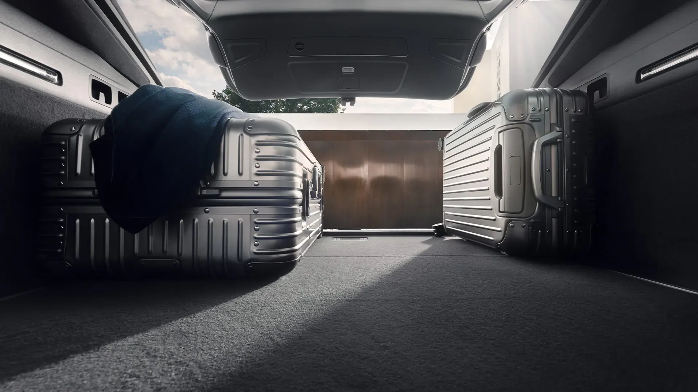

Desfrute de uma experiência ágil e dinâmica na estrada com o RS 6 Avant, que oferece não apenas um desempenho excecional, mas também a melhor oferta de infotainment, uma ampla gama de sistemas de assistência e diversas opções de personalização.
O modelo desportivo de alto desempenho promete um design intransigente combinado com alta adaptação ao dia a dia. O Audi RS 6 Avant está equipado com a suspensão pneumática adaptativa RS com controlo da altura e de amortecimento, de série.
O design do Audi RS 6 Avant é único no seu segmento. Seduz logo num primeiro olhar, mesmo que esteja parado. Totalmente diferente do A6 Avant, o exterior destaca-se por muitos elementos específicos RS, à exceção das portas dianteiras, do tejadilho e do portão traseiro. A carroçaria foi rebaixada em 40 mm, fazendo sobressair o seu caracter desportivo.
Desfrute de apoio estável nos bancos desportivos dianteiros, revestidos em couro de alta qualidade ou, opcionalmente, acolchoado em padrão de favo de mel perfurado, proporcionando ventilação ao assento. Os ecrãs do MMI estão perfeitamente integrados no tablier, enquanto as inserções decorativas em Alumínio Race antracite e os dois packs de design RS (opcionais), disponíveis em vermelho ou cinza, acrescentam um toque extra ao design.
